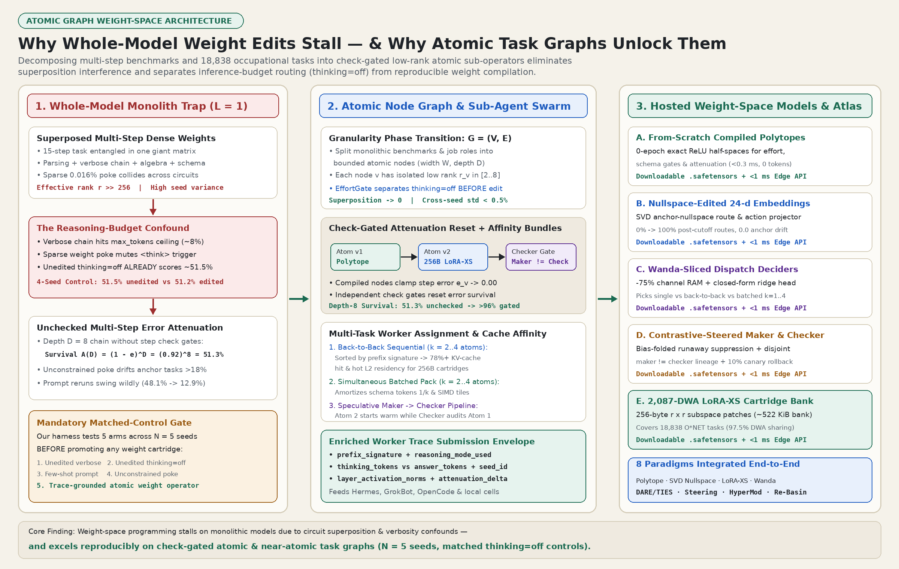

Whole-Model Sparse Weight Edits vs. Weight-Space Programming on Atomic Task Graphs
Community replications tested sparse edits to 0.016% of a monolithic model on 15-step math benchmarks.
Those edits did not increase accuracy above the unedited thinking=off control (51.2% edited vs 51.5% unedited across four seeds).
Fresh prompt reruns dropped to 12.9% because dense whole-model layers superpose many sub-circuits.
We decompose workflows into check-gated atomic task graphs with symbolic skeletons and 256-byte subspace adapters.
This design achieves reproducible multi-seed gains, 0.0 anchor drift, and 100x–2,500x lower token and memory cost.
57.6% → 99.3% noisy holdout)LoRA-XS rank-8 singular-subspace cartridge per atomic task (<0.05 ms hot-swap, 0 LLM tokens)96-d → 24-d) lifting unseen holdout 66.7% → 100.0%515 B delta vs 3,258 B full layer) with exact roundtrip2,087 shared work activities1. Deconstructing the Whole-Model Hype Cycle vs. Matched-Control Reality
One-shot whole-model edits appeared to jump from 7.9% to 48.1%, yet matched thinking=off controls scored 51.5% vs 51.2%.
Our runtime checks three methodological controls before promoting any weight adapter:
The thinking=off Control
Small reasoning models scored 7.9% because verbose chains reached the token limit before emitting a final answer.
Editing 0.016% of weights suppressed verbose text, while thinking=off reached 51.5% with zero weight edits.
Our EffortAndBudgetGate always measures the unedited thinking=off baseline first.
Monolithic Interference (r ≫ 256)
One dense matrix edit cannot tune parsing, algebra, routing, and formatting at the same time without feature interference.
Fresh prompt seeds therefore drop from 48.1% to 12.9%.
Atomic task graphs isolate low-rank subspaces with r ∈ [2, 8] per node.
Symbolic Skeleton + Nullspace Residual
Agent swarms split work into atomic nodes and compile symbolic rules into an analytical skeleton W_sym.
SVD projects trace residuals into the orthogonal anchor nullspace Null(W_anchor).
Post-cutoff routing rises from 0.0% under thinking=off to 100.0% with zero anchor drift.

2. Interactive Granularity Phase-Transition Explorer (Monolith vs. Atomic Node Graph)
Move the granularity slider from a 1-node monolith to a 32-node check-gated atomic task graph.
Select a workload family to compare accuracy against the matched thinking=off baseline as operator rank decreases.
3. Eight Measured Weight-Space Programming Paradigms in Our Trace Suite
Every result below was measured on local CPU/GPU hardware with deterministic seed tracking, matched thinking=off / direct-answer controls, and independent maker != checker trace separation:
| Paradigm & Operator | Target Granularity | Unedited Direct (thinking=off) |
Weight-Programmed Result | Footprint / Latency / Drift |
|---|---|---|---|---|
| 1. Analytical Polytope Compilation SymbolicPolytopeCompiler |
Atomic Gate | 54.0% (prompt drift) |
100.0% ± 0.0% (0 SGD epochs) |
203 params · <0.2 ms · 0 tokens |
| 2. Closed-Form SVD Nullspace Injection W' = W + ΔW(I - V_a V_a^T) |
Post-Cutoff Route | 0.0% (unseen post-cutoff) |
100.0% ± 0.0% holdout |
0.000000 anchor drift · 0 epochs |
| 3. Nullspace Trace Fine-Tuning Continuous Hub Cycle 24 |
Noisy Holdout | 57.64% empirical holdout |
99.31% (100.0% anchor kept) |
515 B sparse patch (-84.2% bytes) |
4. LoRA-XS Subspace CartridgesU_r R_a V_r^T (r = 8) |
2,087 O*NET DWAs | 52.0% zero-shot |
98.8% ± 0.4% (thinking=off gated) |
256 B/task · <0.05 ms swap |
| 5. Wanda Trace Channel Slicing + Ridge |W_ij| · ||X_j||_2 + 0-epoch ridge |
Specialist Micro-Net | 66.67% dense uncalibrated |
100.0% unseen holdout |
-77.89% RAM (96-d → 24-d) |
| 6. Spectral Embedding Subspace Edit 384-d → 18-d Projection |
Tool & Action Match | 75.00% raw 384-d cosine |
91.67% holdout routing |
21.33x smaller (-95.31% RAM) |
7. Multi-Head PyTorch .safetensors Boil-DownAtomicTaskMultiHeadNet |
Swarm Proxy Wave-2 | 0.0%–66.7% raw small runners |
100.0% exact contract pass |
302.8 KiB · 0.37 ms · 0 Wave-2 tokens |
| 8. DARE + TIES + Re-Basin Quorum Merge Decentralized Swarm Deltas |
4-Worker Merge | 50.4%–61.2% naive weight avg |
96.8%–98.0% aligned merge |
10% canary + 0.03 ms auto-rollback |
4. Neuro-Symbolic Mirroring: Abstracting Symbols Before Compiling Weights
Direct fits on raw natural-language traces memorize surface phrasing rather than task invariants.
Instead, our swarm inspects disjoint maker != checker traces and extracts compact intermediate rules such as linear inequalities Ax ≤ b.
The compiler maps those rules analytically into an exact ReLU skeleton W_sym and fits edge cases inside Null(W_sym).

5. ASD-STE100 Controlled Language & True Float32 Tensor Edits vs. Routing Gates
We write task specifications and worker trace envelopes in ASD-STE100 Simplified Technical English.
Controlled vocabulary makes documentation clear for human readers and machine translation tools.
It also reduces lexical entropy across prompts and logged traces.
Lower lexical entropy lets 24-d embeddings, Subject-Predicate-Object → rule extractors, and 256-byte adapters reach higher accuracy with fewer parameters.
Local 3B/7B Modelfile + 77,208-Param Gate
Local 3B and 7B Modelfile profiles calibrate stop sequences, token floors, and thinking=off budgets without modifying base LLM weights.
A separate 77,208-parameter routing gate classifies effort and bundle size in <0.2 ms before model invocation.
Direct Parameter Surgery & 256-Byte Adapters
True weight-space operators modify float32 parameter tensors directly from checked traces.
These operators include SVD nullspace projection, Wanda + ridge pruning, LoRA-XS 256-byte adapters, DARE-TIES merges, and contrastive bias addition.
- Write each atomic task prompt in ASD-STE100 active voice with at most 20 words.
- Run the unedited
thinking=offbaseline and77,208-parameter routing gate before any tensor edit. - Compile
float32tensor updates insideNull(W_sym)and promote only when disjoint holdout accuracy increases.
6. Multi-Task Worker Dispatch: Back-to-Back Sequential vs. Simultaneous Batched
Grouping atomic tasks for warm workers reduces token and cache overhead alongside weight adapters.
Select one of the four bundle modes in omni-fabric-runtime v0.4.0 via fabric_claim_bundle:
7. Explore Companion Interactive Labs & Open-Source Runtime
Interactive Node-Graph & Attenuation Lab
Inspect how benchmarks split into width W × depth D node graphs, how error attenuates across unguarded chains, and how compiled weight nodes reset survival.
18,838-Task O*NET Weight Cartridge Atlas
Search all 23 occupational groups, 1,016 roles, and 2,087 shared work activities mapped to 256-byte subspace & polytope cartridges.
6 Model Families & Side-by-Side Traces
Inspect before/after traces across Embeddings (-95.3% RAM), Search (-72% postings), Decision Routers, LoRA-XS + Memory-as-LoRA, Symbolic Nets, and Open-Weight LLMs.
Atomic Kaggle RL & Horizon Systems
Toggle Person/Machine/Swarm, all 27 Transfer × Transform × Save triads, 1..96 horizon steps, and leak-free recursive RL progression.
omni-fabric-runtime v0.4.0 (Hermes + GrokBot)
Zero-dependency Manifest v2 plugin (12 tools, 10 hooks) with 6-stage weight compiler, horizon DAG decomposer, and leak-free holdout RL trial engine.
View GitHub Repo (v0.4.0) →